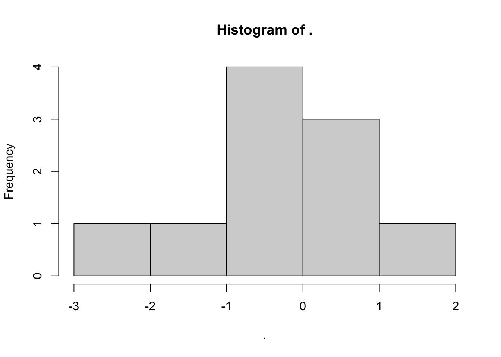
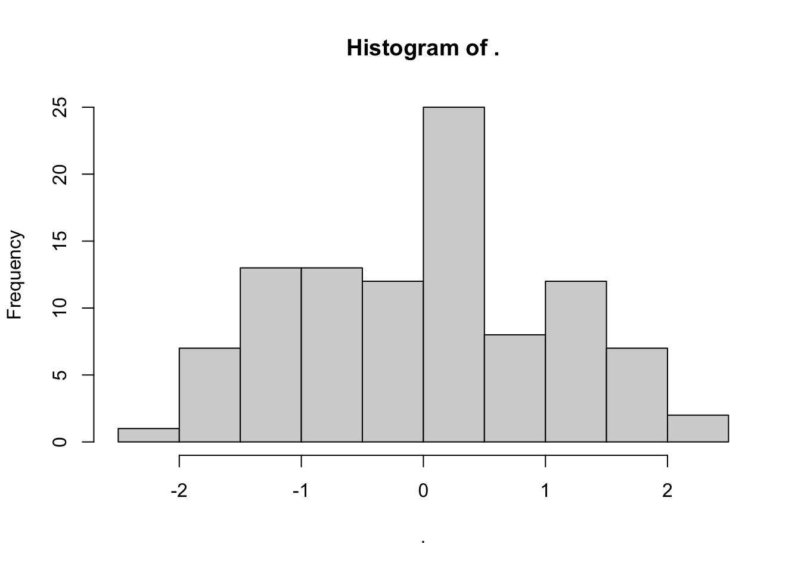
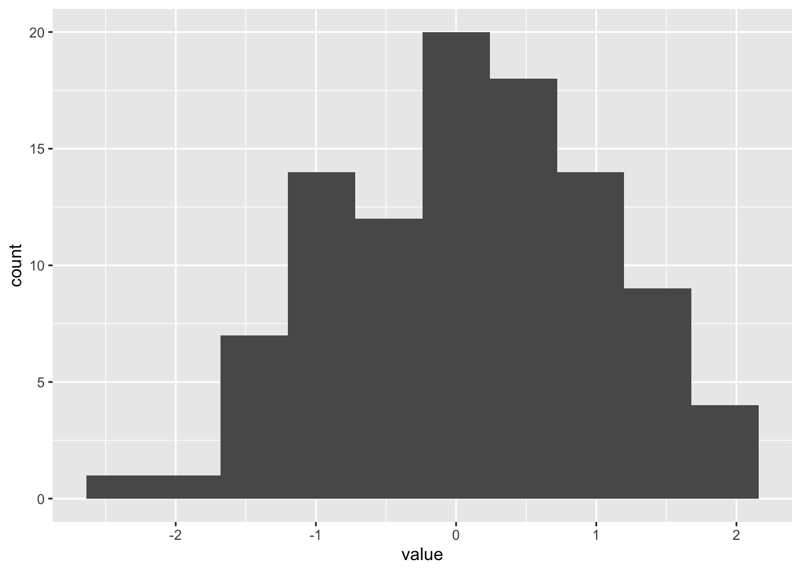
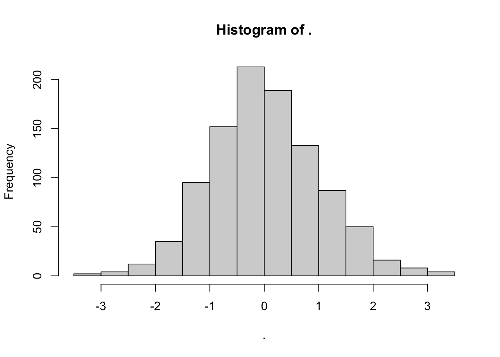
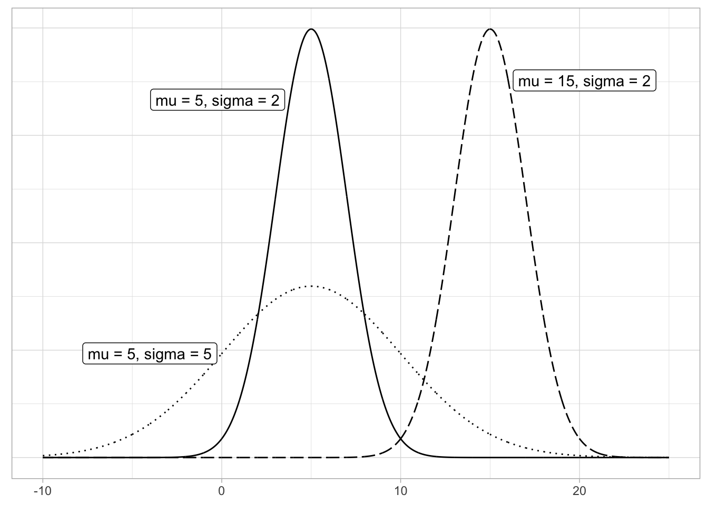
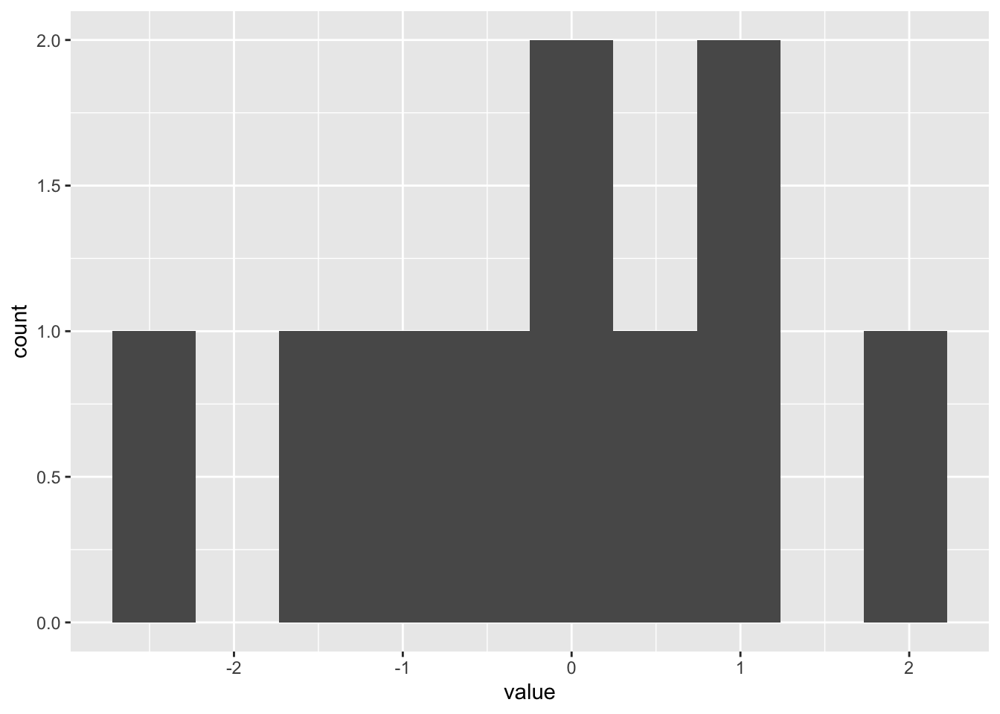
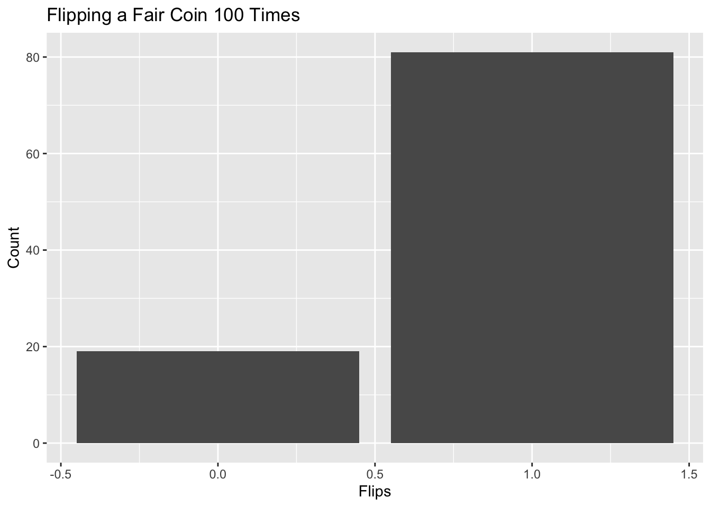
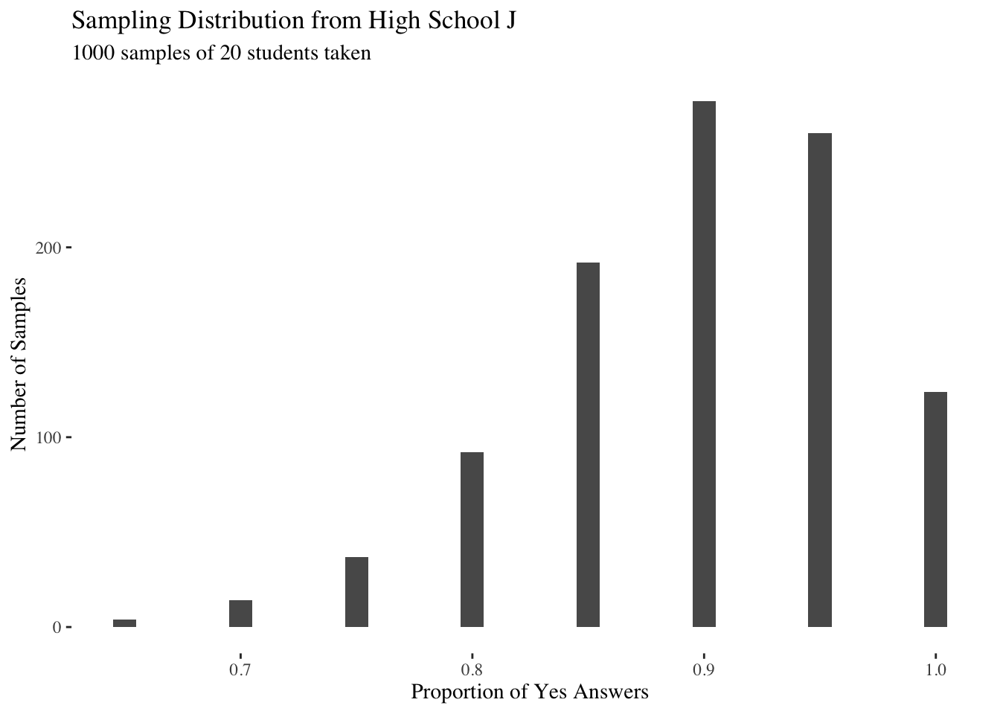
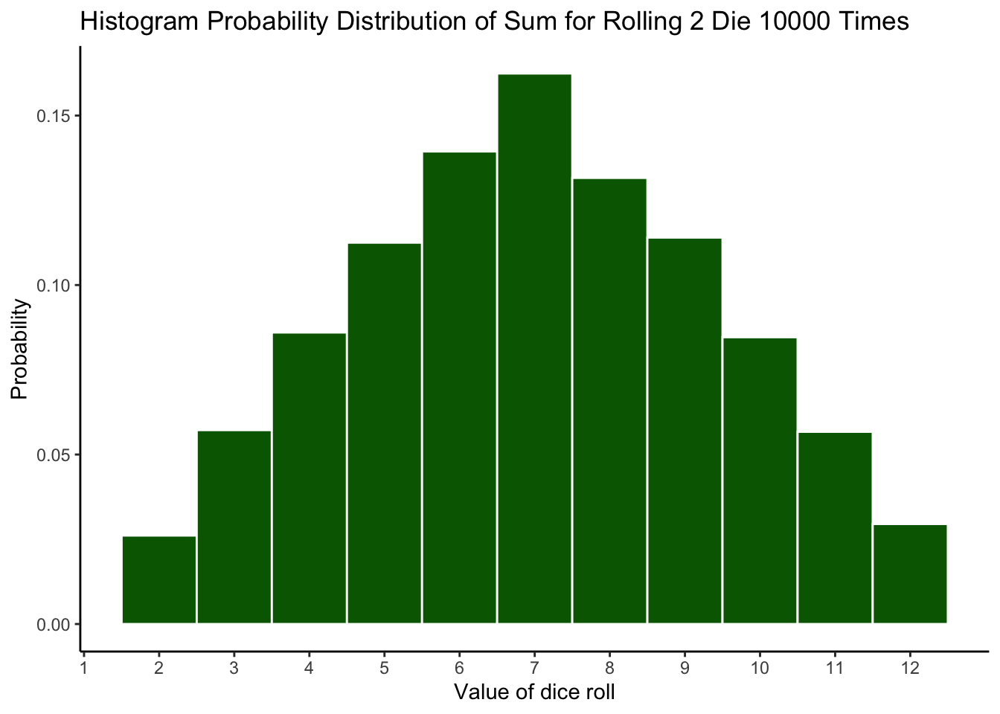

Chapter 5 Probability
5.1 The Language of Inference
 FIGURE 5.1: Dice and Probability.
FIGURE 5.1: Dice and Probability.
The opening paragraph of Workshop Statistics: Discovery with Data, A Bayesian Approach by James H. Albert and Allan J. Rossman does a wonderful job of explaining the concept of probability. “In the activities to follow, we don’t know if we have a particular disease, if a die being used in the casino is fair, the exact number of fish in our backyard pond, or the number of defectives in a shipment of electronic components. A model is a possible description of this unknown phenomena. In each application, there will be a number of possible models. We assign prior probabilities to these models — these probabilities reflect our opinions about which models are more or less likely to be true. To learn about the correct model, data will be observed. In the activities, the data will consist of the results of a blood test, the results of a roll of the die, the results of a capture-recapture experiment, and the number of defectives observed in a sample. This data will change our opinions about the likelihoods of the different models. Bayes’ rule is the formula which tells us how to compute the new model probabilities.”
The central tension, and opportunity, in data science is the interplay between the data and the science, between our empirical observations and the models which we use to understand them. Probability is the language we use to explore that interplay; it connects models to data, and data to models.
What does it mean that Trump has a 30% chance of winning re-election this fall? That there is a 90% probability of rain today? That the die at the casino is unfair? If I roll that die 10 times and five of those times I get a three, how likely is it that the die is unfair?
Probability is about quantifying uncertainty. We can think of probability as a proportion. The probability of an event occurring is a number from 0 to 1, where 1 means that the event is 100% certain.
Let’s begin with the simplest events: coin flips and dice rolls. If the die and the coins are fair, we can operate under the assumption that all outcomes are equally likely.
This allows us to make the following statements:
- The probability of rolling either a 1 or 2 is 2/6, or 1/3.
- The probability of rolling either 1, 2, 3, 4, 5, or 6 is 1.
- The probability of flipping a coin and getting a tail is 1/2.
We can also use subtraction to make opposite statements:
- The probability of not getting a 1 or 2 is 2/3.
- The probability of not rolling 1, 2, 3, 4, 5, or 6 is 0.
- The probability of not flipping a coin and not getting a tail is 1/2.
5.2 Unknown Unknowns
Donald Rumsfeld, the former US Secretary of Defense, once said the following tongue-twisting quote:
“There are known knowns. There are things we know we know. We also know there are known unknowns. That is to say, we know there are some things we do not know. But there are also unknown unknowns, the ones we do not know we do not know.”
What does this mean? Well imagine there are people playing games on the street corners of New York. The guy leading the game flips a coin 50 times and shows that there is approximately equal probability of landing heads or tails. Even if the guy can prove the odds of each result through simulations, that doesn’t say anything about what will likely happen when someone in the crowd decides to bet on a certain result.
5.3 Probability and Simulations
Now, let’s take our understanding of probability and apply it to a data science context.
Flipping 1 coin 1 time gives us a flat histogram:

Flipping a single dice 1000 times gives us a histogram with probability of around 0.5 for each of heads and tails. Notice that the sum of the probabilities is 1.

Here is the result of rolling a dice 1000 times:

This is the result of rolling the same 2 die 1000 times:

Do you notice a common characteristic among all the histograms we’ve seen so far? If we add up the area under the “curve,” we get a sum of 1. Let’s think about this intuitively. Each single dice roll is guaranteed to yield a result of 1, 2, 3, 4, 5, or 6. Thus, the sum of the probabilities of each result gives us 100%.
Another way to denote a histogram showing many coin tosses is P(coin), since the histogram is really a representation of all the possible results of the toss. Similarly, the histogram for rolling a single dice many times is P(dice).
A histogram is functionally a probability distribution function or PDF. A PDF in the field of statistics is a graph showing how likely a random observation would give a specific value on the x axis. With the first histogram where we flip 1 coin 1 time, for instance, the likelihood of getting the result we did is 1.
There is a caveat, though. The term PDF technically only applies to samples where the results on the x axis are continuous and not discrete values. The results of coin flips and die rolls seem to be discrete. However, let’s look back at the histograms. The height of the histogram, which represents probability, is not discrete; the height is continuous even though the results are discrete. Taking this observation one step further, we realize the following:
You technically can’t measure continuous anything. Even if you could, you wouldn’t be able to put it on a computer! Thus, we can functionally think of the histograms we’ve generated as PDFs.
Using our knowledge of PDFs, histograms, and simulations, we can solve a problem.
What are the odds of that the sum of two die will be seven? We could figure this out analytically, but a simulation in R is a easy way to predict and confirm our expected probability.
We create a dice and set the number of simulations. Next, we build a tibble and filter for observations where the sum of the die equals 7.
Note that we could have hard-coded the sims value into the tibble call in step 3 by setting size = 10000. However, it is good practice to create a separate variable. This way, if we want to change the number of simulations, we do not need to manually change all of our code.
dice <- c(1:6)
sims <- 10000
mydata <- tibble(dice_1 = sample(dice, size = sims, replace = TRUE),
dice_2 = sample(dice, size = sims, replace = TRUE))
count <- mydata %>%
filter((dice_1 + dice_2) %in% 7) %>%
count() %>%
pull(n)
probability <- count/simsIn this simulation, we calculated a final probability of 0.1627.
To visualize the probability of different outcomes, we can build a histogram using the tibble we just created.
First, we create a column in our tibble containing the sum of the two die that we rolled.
mydata <- mydata %>%
mutate(sum = (dice_1 + dice_2))
ggplot(mydata, aes(x = sum)) +
geom_histogram(aes(y=..count../sum(..count..)), binwidth = 1,
fill = "dark green", color = "white") +
labs(title = "Histogram Probability Distribution of Sum for Rolling 2 Die 10000 Times",
x = "Value of dice roll",
y = "Probability") +
scale_x_continuous(breaks = seq(0,12,1), labels = 0:12) +
theme_classic()Similarly, we could create a more complicated simulation of the fall election and count the number of observations involving Trump’s re-election. We could simulate different weather patterns and count the number of observations involving rain today.
Takeaway: we want to simulate a scenario as many times as possible, then count the number of observations with the desired outcome.
5.4 Tree Diagrams
5.4.1 Independence
So far, you have learned how to calculate P(A), which is the fancy, statistical way of saying the probability of an event. When flipping a coin, the probability of getting heads was 1/2. You have also learned how to compute the P(A or B). This means the probability of either A or B happening. When rolling a dice, P(1 or 2)–the probability of getting a 1 or a 2–was 1/3.
What if you flipped 2 coins? You know that the probability of getting heads once is 1/2, but what are the odds of getting heads 2 times in a row? Let’s take a look at this tree diagram. We read this diagram from left to right. On the left, the probability of getting heads is 0.5. Now the tree branches out.
- If we got heads the first time, then we go up the top branch. The probability of getting heads again is 0.5.
- If we got tails the first time, then we go down the bottom branch. The probability of getting heads is 0.5.
Notice how regardless of what we get the first time we flip the coin, the probability of getting heads is 0.5 throughout. This suggests that the coin flips are independent. The result of one coin flip does not impact the likelihood of getting the same result next time. Take a look at the tree diagram. P(H given H) represents the probability of getting heads given that we got heads the first time. P(H given T) represents the probability of getting heads given that we got tails the first time. P(H given H) = P(H given T).

5.4.2 Conditional probability
Now imagine that 60% of people in a community have a disease. A doctor develops a test to determine if a random person has the disease. However, this test isn’t 100% accurate. This test is 80% sure of correctly returning positive if the person has the disease and 90% sure of correctly returning negative if the person does not have the disease.
This tree diagram illustrates exactly this. Starting from the left, we see that the probability of a random person having the disease is 0.6. Since they either have the disease or don’t (those are the only two possibilities), the probability that they don’t have the disease is 1 - 0.4.
Now the tree branches out.
- If the random person has the disease, then we go down the top branch. The probability of the person testing positive is 0.8 because the test is 80% sure of correctly returning positive when the person has the disease.
- By the same logic, if the random person does not have the disease, we go down the bottom branch. The probability of the person incorrectly testing positive is 0.1.
We decide to go down the top branch if our random person has the disease. We go down the bottom branch if they do not. This is called conditional probability. The probability of testing positive is dependent on whether the person has the disease.
How would you express this in statistical notation? P(A|B) is the same thing as the probability of A given B. P(A|B) essentially means the probability of A if we know for sure that B is true.
Positive: The test results suggest that the patient has the disease. False Positive: The patient does not have the disease but the test results incorrectly suggest that they do. Negative: The test results suggest that the patient does not have the disease. False Negative: The patient has the disease but the test results incorrectly suggest that they do not.

This concept of conditional probability is relevant in our everyday lives. For example, the probability of Trump’s re-election might be different than the probability of Trump’s re-election given that we are in a recession. The probability of you reading a textbook might vary, depending on the likelihood of your instructor cold-calling you in class. Whenever you encounter a question involving conditional probability, drawing a tree diagram is a very useful approach to visualization.
5.4.3 Two Diagrams for One Set of Coin Flips
In our histogram probability distribution, we didn’t care what combinations of numbers made each sum. We only cared about the outcome. There are two ways of thinking about a coin toss as well. Your tree diagram should look different depending on whether the order of the results matters.
To understand tree diagrams a little better, imagine you’re flipping 2 coins. Your tree diagram may look different depending what you’re interested in measuring.
In this figure, the order of your coin toss results does not matter. We can imagine that you are rolling two coins together, or that you only care about the sum of the two die values.

In this figure, the order of your coin toss results does matter. Depending on your first result, you go down a different branch.

5.5 Comparing Two Models
Imagine you wake up one morning and feel a little bit under the weather. Not sick, just not 100%. So, you go to your doctor and your doctor is confused. So, she runs a slew of tests and in a couple of days, one of them comes back positive. You’ve tested positive for a rare disease, called \(X\). Only .1% of the population has this disease. And the test correctly identifies you as positive 99% of the time!
So, understandably worried, you ask yourself: what is the probability I have this disease?
The immediate, but wrong, answer would be 99%. Why is this wrong? Isn’t 99% the accuracy of the test? To understand, we’re going to abandon probability as a proportion (ie 99%) and think of it in counts.
Imagine you’re part of a population of 1000 people. Now, the frequency of the disease is .1%. In terms of a count, that means 1 person has this disease of the 1000 in the population. The test would probably correctly identify this individual. However, a test with an accuracy of 99% would also identify 10 other perfectly healthy people out of 1000 people as sick! That means that the number of people who would test positive for the disease is 11 but only one of them has the disease. So, in simple terms, the probability of you having the disease given a positive test is \(1\div11\)!
It becomes easier to understand when you increase this population size 10,000 and model this!

Remember, we’re currently conceptualizing probability in counts. Therefore, a .1% chance of having the disease means 10 people have it and a 99% chance of testing correctly (a 1% chance of testing incorrectly) means 100 people were incorrectly identified as positive (in addition to the 10 people who tested positive correctly). So, to recap:
10 people have the disease
They all tested positive
9990 people don’t have the disease
100 of them still tested positive
There’s a population of 110 people who tested positive and only 10 of them have the disease. So, if you test positive, your chances of having the disease are \(10\div110\), which is equal to 9%!
Now, let’s switch back to proportion-based probabilities and think about it. Just because the probability of having the disease is .1% and the test is 99% accurate, it doesn’t mean that these are the exact numbers that always work out in the real world. That is, for a sample of 10,000, a disease frequency of .1% doesn’t necessarily mean that 10 people have the disease. It could be 11. Or 9. Or 20! Given that uncertainty, we do what we did above. We model. We built and understanding of the world and expressed it in counts. We then used that to understand what the implications of an event (testing positive) are on our belief that we have the disease. In the next section, we’ll follow the same principle but make this a little more complicated.
5.6 Comparing Three Models
5.7 Comparing N Models
Imagine there are 10 high schools in your district. Each high school has 1000 students. You are the statistics teacher at high school \(A\) and the rest of the high schools are \(B\) through \(J\). You’re really into statistics and you have a deep burning desire to know:
- What portion of high school students at my lovely school of \(A\) love statistics?
The easy way to answer this question would be to ask all 1000 of the students at \(A\) whether they love statistics. You count up the “Yes” answers and divide by 1000 and boom! There’s your answer. However, the statistics department at \(A\) is extremely underfunded and you only have the power to ask 20 random students this question. So, you ask 20 random students and you get 8 “Yes” answers. Is the proportion of students that love statistics at high school \(A\) equal to \(8\div20 = .4\)?
The correct answer is … you don’t know. Rather, this is information that may help you better understand the true (unknown) answer. So, where do you go from here?
The next question you ask is “well … how likely is it to get a sample of 20 with a sample proportion of .4 for various population proportions?” That is, if the population proportion is \(500\div1000 = .5\), how likely is it I get a sample of 20 with 8 “Yes” answers.
Or, if the population proportion is .3, how likely is it I get a sample of 20 with 8 “Yes” answers?
You contact all your other statistics teacher friends at high schools \(B\) through \(J\). Those statistics teacher are much more fortunate than you and have plenty of resources! They tell you that they were able to ask each one of the students the question and get a precise answer for the proportion of their students who love statistics! Great for them, but how does this help you.
Well, incidentally, each of the other high schools has a distinct and exact proportion of students. At \(B\), the teacher discovered that \(100\div1000 = .1\) students love statistics. At \(C\), the teacher discovered that \(200\div1000 = .2\) students love statistics. This goes on and it turns out high school \(J\) has \(900\div1000 = .9\) students that love statistics.
Well, each of these schools can serve as a model for sampling from a population with a given proportion.
You’re pretty smart and so you ask each of your friends to repeatedly choose 20 random students at their schools and ask them if they love statistics. Your helpful teacher friends record the answers.
- To clarify, the teacher at \(B\) is asking random samples of 20 students whether they love statistics from a population in which 10% of the students love statistics.
So, at high school \(B\), if the teacher asked 1000 groups of 20 random students, the distribution of the proportions of each group the teacher asked look like this:
This means that with a population proportion of .1, the teacher is likely to get answers that range from [.05, .5]. You, at your high school, with a sample proportion of .4, could easily fall into this. It could be the case that your population proportion is actually .1.
Suppose the teacher at high school \(J\) did this? Remember, \(J\) has a 90% proportion of yes answers.

Then, your answers range from [.65, 1]!
So at your high school (where you got a sample proportion of .4), you can probabaly conclude your population percentage is not .9. That is, it’s very unlikely 900 out of 1000 students at your high school \(A\) love statistics. Why? Because your sample from \(A\) gave you a proportion of .4 and when we sampled from high school \(J\) (where we’re sure the actual population proportion is .9), we got zero samples that had a proportion of .4.
This is how each of these other high schools is a model you can use to update your understanding of where your high school is. That’s because you can use them to determine what samples look like if the population you are sampling from had various proportions.
What if we did this for every high school \(B\) through \(J\)?

Clarifying notes:
- Each row is a population (or “high school”) and at each high school, we’ve surveyed 1000 random groups of 20 and recorded the proportions. The darkness of each cluster represents how many individual samples are in that area. The clusters with few, lighter points are less likely to occur in the sampling distribution. So, for example, if I wanted to know the sampling distribution of one particular high school, I’d look at that row. The animation below illustrates this concept:

- Read the graph vertically (find a point along the x-axis and look up) if you’re trying to figure out in which population proportion(s) your sample statistic appears.
Jim Albert goes through a very similar example and as he points out: “The histogram of the simulated values of the proportion p reflects the prior distribution that we placed on this parameter. The histogram of the simulated values of the data y is also meaningful. This is the distribution of data that is plausible assuming our prior on p and the binomial sampling model.” Read more: Jim Albert (1997) Teaching Bayes Rule: A Data-Oriented Approach, The American Statistician, 51:3, 247-253
- Read the graph horizontally (find a point on the y-axis and look to the side) if you’re trying to figure out the distribution of sample statistics given a population proportion.
So, from this scatterplot you can observe some interesting things about your own initial sample of 20 at high school \(A\).
You got a sample proportion of .2. If you find that place on the x-axis, you can see all of the population proportions for which that sample proportion occurs. That would be from .1 to .5! You’re pretty confident your high school has a proportion somewhere in there!
In fact, you even know the how likely a sample proportion tends to appear in a population proportion. While a .6 proportion population sometimes gives a sample with a proportion of .2, it doesn’t do so as often as a population with the proportion of .2. If you took 10 more samples of 20 at your high school and got values close to .2, you’re increasing your confidence the population of your high school is closer to .2
The above means you can use this scatterplot to estimate a confidence interval for your sample of 20. If you want a 90% confidence interval, find population proportions which have a sampling distribution in which this sample result is in the middle 90% of the data!
There are a few key takeaways we want to note in this situation.
First, we are uncertain about the actual proportion of the population that loves statistics. This is likely to always be the case - that we are uncertain about the parameter. We won’t really know what the true probability is. We can however, become better informed about what it could be. For that, we use models. That is the principle expressed in this in this example. We created a bunch of models for each potential probability and used the results of those models to understand which model is more or less likely to explain our specific results.
Second,
5.8 Testing is Evil
In some fields, it is common to want to test a specific hypothesis. Consider the hypothesis that the coin is fair, i.e., that \(p = 0.5\). Does the data we have support or reject that hypothesis? (Be wary that \(p\) is both used for the probability of a head and the \(p\)-value of a hypothesis test.)
Not really interested in that exact test except in toy scenarios.
Difference between 0.04 and 0.06 is rarely significant. And is hardly ever a good reason to decide X over Y.
5.9 Posterior Predictions (Advanced)
Looking at the marginal distributions from the Bayes scatterplots shows us the posterior distribution of the data, conditioning on the model, and of the model, conditioning on the data. In other words, if the model us true, this is what we believe about the distribution of the data, both the data that we have already seen and about the data we will see in the future, assuming that that the model is true.
But such a forecast is, in the real world, not the best forecast possible because it is assuming that the model is 100% true — in this case, that \(p = 0.4\) — even though we don’t know, for certain, that the model is true. Indeed, the whole point of the Bayesian scatter plot is to show that, if we see 8 heads in 20 tosses, that, although \(p = 0.4\) is the most likely model, it could be that \(p = 0.3\) or \(p = 0.5\). We are uncertain about what \(p\) is. The best possible forecast will incorporate that uncertainty, will not pretend that we know, for certain, that \(p = 0.4\). Forecasts which incorporate our uncertainty about parameter values are called “posterior predictions.”
To construct posterior predictions, we do the same sampling proceedure as with the Bayes scatterplots, while averaging over the rest of possible values for \(p\), weighted by their relative likelihood. Recall the analysis above:
# Same code to get set up as before. But 10,000 this time for more stability,
# and to really see some extreme values for p. Don't need to show this code
# again. Maybe just show the plot.
set.seed(10)
mod <- seq(0, 1, 0.1)
rep <- 1:10000
toss <- 1:20
x <- crossing(mod, rep, toss) %>%
mutate(result = ifelse(runif(n = nrow(.)) < mod, 1, 0)) %>%
group_by(mod, rep) %>%
summarize(total = sum(result)) %>%
filter(total == 8)## `summarise()` regrouping output by 'mod' (override with `.groups` argument)# Show that the plot is the same, but highlight that there is a chance, however
# miniscule, that p is 0.8 or 0.1.
x %>%
ggplot(aes(x = mod)) +
geom_bar(aes(y = (..count..)/sum(..count..))) +
scale_y_continuous(labels=percent) +
labs(title = "Posterior Estimate of p Given 8 Heads in 20 Flips",
subtitle = "p is more likely to be something other than 0.4",
x = "Probability of Heads",
y = "Posterior")
Although the most likely value for \(p\) is 0.4, it is actually more likely that \(p\) is a different value than 0.4, either lower or higher and, potentially, much lower or higher. To get the correct uncertainty in our forecasts for the number of heads in the next 20 tosses, we need to incorporate that uncertainty directly.
## # A tibble: 4,827 x 1
## # Groups: mod [8]
## mod
## <dbl>
## 1 0.1
## 2 0.1
## 3 0.1
## 4 0.1
## 5 0.1
## 6 0.2
## 7 0.2
## 8 0.2
## 9 0.2
## 10 0.2
## # … with 4,817 more rows5.10 Key Themes
Casino talk.
5.10.1 Model Structure
Is \(P_h\) constant?
5.10.2 Parameter Uncertainty
 FIGURE 5.2: Coin Flip Uncertainty.
FIGURE 5.2: Coin Flip Uncertainty.
\(p(MI)\)
\(p(P_h)\) Only people who hate students do that sort of stuff.
\(p(H=10)\)
Suppose your friend sets up a pseudo-casino in the playground of the neighborhood school. He’s offering everyone the opportunity to play probability games and bet money. The first game is simple: coin tosses. If the coin lands on heads, you get five dollars. If it lands on tails, you pay three dollars.
You have a sneaking suspicion that the coin isn’t fair and you ask your friend to flip it 10 times to test your theory. However, you must not be overconfident. 10 observations might be too few to judge the fairness of the coin. Perhaps your friend secretly switches coins when it comes time for the actual betting and your sample in the initial simulation is nonrepresentative. You might be nervous about losing your money and even miscount the number of heads and tails. These are all examples of parameter uncertainty. Sometimes, a model has the correct form. But it’s not practical to run the simulation millions of times to be certain of the outcome. It’s not possible to be absolutely certain that your friend isn’t switching coins. A perfect world does not exist, so we must have reservations when drawing likely conclusions.
5.10.3 Unmodeled Variation
(This may be difficult to talk about since we don’t (?) write down formulas with error terms.) But each chapter should discuss the concept of a residual. Even if we have perfect parameter estimates for a model structure which matches the unknown data generating mechanism, we still won’t make perfect predictions. Some randomness is intrinsic. Example: prediction for an individual.
result = model + other stuff, where other stuff is variation which is not part of the model, i.e., it is
45 = 40 + 5
unmodeled variation. residual; fitted value expected value
result = fitted (expected) value + residual
5.10.4 Predictive Uncertainty
Still conditional on model structure. p(result from experiment to come)
5.10.5 Unknown Unknowns
 FIGURE 5.3: Donald Rumsfeld.
FIGURE 5.3: Donald Rumsfeld.
Donald Rumsfeld, the former US Secretary of Defense, once said the following tongue-twisting quote:
“There are known knowns. There are things we know we know. We also know there are known unknowns. That is to say, we know there are some things we do not know. But there are also unknown unknowns, the ones we do not know we do not know.”
 FIGURE 5.4: Three Card Monte.
FIGURE 5.4: Three Card Monte.
What does this mean? Well imagine a crowd playing Three Card Monte in the streets of New York. The guy running the game runs a demo and shows you all the cards to make you confident. They earn money by making you overconfident and persuading you to bet. Your odds may seem good during the demo round, but that doesn’t actually say anything about what will likely happen when the real, high stakes game begins. The person running the game does many simulations, making the “victim” forget that they cannot actually make any conclusions about the odds of winning. There are some variables that we simply do not know. People can be using slight of hand, for instance.
Page built: 2020-07-08